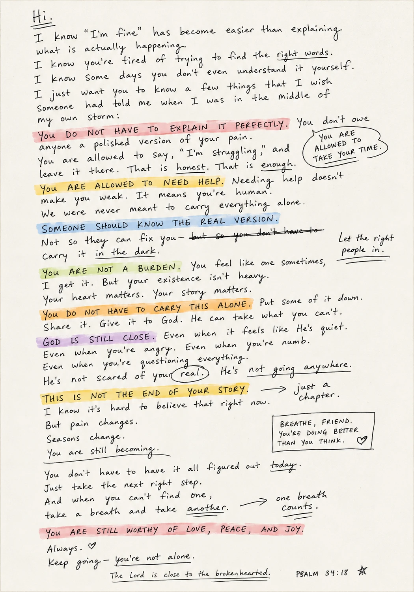
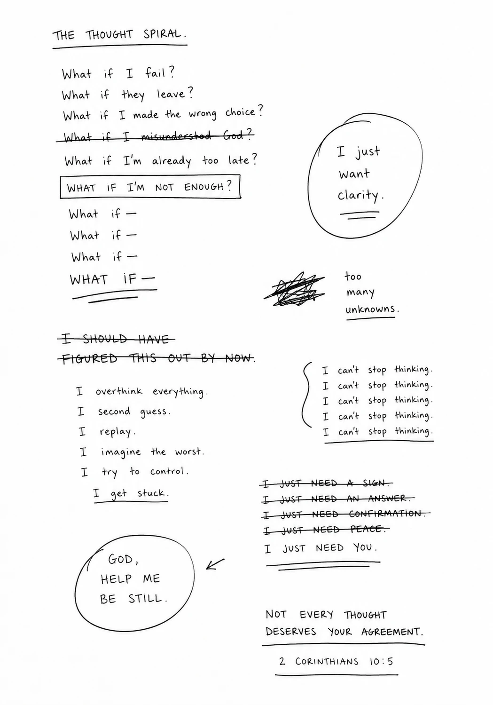

Photo Essay / Page 44
Rooms that became altars.
No one in this issue needs to perform certainty. The room can be ordinary. The prayer can be unfinished. The point is attention.
Genesis 28 gives us a traveler waking up to the place he was already in.

